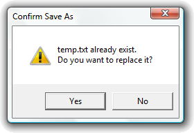

title: Using Dialog Boxes description: You use dialog boxes to display information and prompt for input from the user. ms.assetid: 8a5b6bdd-4429-4f48-b846-6bd617a87abf keywords:
You use dialog boxes to display information and prompt for input from the user. Your application loads and initializes the dialog box, processes user input, and destroys the dialog box when the user finishes the task. The process for handling dialog boxes varies, depending on whether the dialog box is modal or modeless. A modal dialog box requires the user to close the dialog box before activating another window in the application. However, the user can activate windows in different applications. A modeless dialog box does not require an immediate response from the user. It is similar to a main window containing controls.
The following sections discuss how to use both types of dialog boxes.
The simplest form of modal dialog box is the message box. Most applications use message boxes to warn the user of errors and to prompt for directions on how to proceed after an error has occurred. You create a message box by using the MessageBox or MessageBoxEx function, specifying the message and the number and type of buttons to display. The system creates a modal dialog box, providing its own dialog box template and procedure. After the user closes the message box, MessageBox or MessageBoxEx returns a value identifying the button chosen by the user to close the message box.
In the following example, the application displays a message box that prompts the user for an action after an error condition has occurred. The message box displays the message that describes the error condition and how to resolve it. The MB_YESNO style directs MessageBox to provide two buttons with which the user can choose how to proceed:
int DisplayConfirmSaveAsMessageBox()
{
int msgboxID = MessageBox(
NULL,
L"temp.txt already exists.\nDo you want to replace it?",
L"Confirm Save As",
MB_ICONEXCLAMATION | MB_YESNO
);
if (msgboxID == IDYES)
{
// TODO: add code
}
return msgboxID;
}
The following image shows the output from the preceding code example:

You create a modal dialog box by using the DialogBox function. You must specify the identifier or name of a dialog box template resource and a pointer to the dialog box procedure. The DialogBox function loads the template, displays the dialog box, and processes all user input until the user closes the dialog box.
In the following example, the application displays a modal dialog box when the user clicks Delete Item from an application menu. The dialog box contains an edit control (in which the user enters the name of an item) and OK and Cancel buttons. The control identifiers for these controls are ID_ITEMNAME, IDOK, and IDCANCEL, respectively.
The first part of the example consists of the statements that create the modal dialog box. These statements, in the window procedure for the application's main window, create the dialog box when the system receives a WM_COMMAND message having the IDM_DELETEITEM menu identifier. The second part of the example is the dialog box procedure, which retrieves the contents of the edit control and closes the dialog box upon receiving a WM_COMMAND message.
The following statements create the modal dialog box. The dialog box template is a resource in the application's executable file and has the resource identifier DLG_DELETEITEM.
case WM_COMMAND:
switch (LOWORD(wParam))
{
case IDM_DELETEITEM:
if (DialogBox(hinst,
MAKEINTRESOURCE(DLG_DELETEITEM),
hwnd,
(DLGPROC)DeleteItemProc)==IDOK)
{
// Complete the command; szItemName contains the
// name of the item to delete.
}
else
{
// Cancel the command.
}
break;
}
return 0L;
In this example, the application specifies its main window as the owner window for the dialog box. When the system initially displays the dialog box, its position is relative to the upper left corner of the owner window's client area. The application uses the return value from DialogBox to determine whether to proceed with the operation or cancel it. The following statements define the dialog box procedure.
char szItemName[80]; // receives name of item to delete.
BOOL CALLBACK DeleteItemProc(HWND hwndDlg,
UINT message,
WPARAM wParam,
LPARAM lParam)
{
switch (message)
{
case WM_COMMAND:
switch (LOWORD(wParam))
{
case IDOK:
if (!GetDlgItemText(hwndDlg, ID_ITEMNAME, szItemName, 80))
*szItemName=0;
// Fall through.
case IDCANCEL:
EndDialog(hwndDlg, wParam);
return TRUE;
}
}
return FALSE;
}
In this example, the procedure uses GetDlgItemText to retrieve the current text from the edit control identified by ID_ITEMNAME. The procedure then calls the EndDialog function to set the dialog box's return value to either IDOK or IDCANCEL, depending on the message received, and to begin the process of closing the dialog box. The IDOK and IDCANCEL identifiers correspond to the OK and Cancel buttons. After the procedure calls EndDialog, the system sends additional messages to the procedure to destroy the dialog box and returns the dialog box's return value back to the function that created the dialog box.
You create a modeless dialog box by using the CreateDialog function, specifying the identifier or name of a dialog box template resource and a pointer to the dialog box procedure. CreateDialog loads the template, creates the dialog box, and optionally displays it. Your application is responsible for retrieving and dispatching user input messages to the dialog box procedure.
In the following example, the application displays a modeless dialog box — if it is not already displayed — when the user clicks Go To from an application menu. The dialog box contains an edit control, a check box, and OK and Cancel buttons. The dialog box template is a resource in the application's executable file and has the resource identifier DLG_GOTO. The user enters a line number in the edit control and checks the check box to specify that the line number is relative to the current line. The control identifiers are ID_LINE, ID_ABSREL, IDOK, and IDCANCEL.
The statements in the first part of the example create the modeless dialog box. These statements, in the window procedure for the application's main window, create the dialog box when the window procedure receives a WM_COMMAND message having the IDM_GOTO menu identifier, but only if the global variable does not already contain a valid handle. The second part of the example is the application's main message loop. The loop includes the IsDialogMessage function to ensure that the user can use the dialog box keyboard interface in this modeless dialog box. The third part of the example is the dialog box procedure. The procedure retrieves the contents of the edit control and check box when the user clicks the OK button. The procedure destroys the dialog box when the user clicks the Cancel button.
HWND hwndGoto = NULL; // Window handle of dialog box
...
case WM_COMMAND:
switch (LOWORD(wParam))
{
case IDM_GOTO:
if (!IsWindow(hwndGoto))
{
hwndGoto = CreateDialog(hinst,
MAKEINTRESOURCE(DLG_GOTO),
hwnd,
(DLGPROC)GoToProc);
ShowWindow(hwndGoto, SW_SHOW);
}
break;
}
return 0L;
In the preceding statements, CreateDialog is called only if hwndGoto does not contain a valid window handle. This ensures that the application does not display two dialog boxes at the same time. To support this method of checking, the dialog procedure must set to NULL when it destroys the dialog box.
The message loop for an application consists of the following statements.
BOOL bRet;
while ((bRet = GetMessage(&msg, NULL, 0, 0)) != 0)
{
if (bRet == -1)
{
// Handle the error and possibly exit
}
else if (!IsWindow(hwndGoto) || !IsDialogMessage(hwndGoto, &msg))
{
TranslateMessage(&msg);
DispatchMessage(&msg);
}
}
The loop checks the validity of the window handle to the dialog box and only calls the IsDialogMessage function if the handle is valid. IsDialogMessage only processes the message if it belongs to the dialog box. Otherwise, it returns FALSE and the loop dispatches the message to the appropriate window.
The following statements define the dialog box procedure.
int iLine; // Receives line number.
BOOL fRelative; // Receives check box status.
BOOL CALLBACK GoToProc(HWND hwndDlg, UINT message, WPARAM wParam, LPARAM lParam)
{
BOOL fError;
switch (message)
{
case WM_INITDIALOG:
CheckDlgButton(hwndDlg, ID_ABSREL, fRelative);
return TRUE;
case WM_COMMAND:
switch (LOWORD(wParam))
{
case IDOK:
fRelative = IsDlgButtonChecked(hwndDlg, ID_ABSREL);
iLine = GetDlgItemInt(hwndDlg, ID_LINE, &fError, fRelative);
if (fError)
{
MessageBox(hwndDlg, SZINVALIDNUMBER, SZGOTOERR, MB_OK);
SendDlgItemMessage(hwndDlg, ID_LINE, EM_SETSEL, 0, -1L);
}
else
// Notify the owner window to carry out the task.
return TRUE;
case IDCANCEL:
DestroyWindow(hwndDlg);
hwndGoto = NULL;
return TRUE;
}
}
return FALSE;
}
In the preceding statements, the procedure processes the WM_INITDIALOG and WM_COMMAND messages. During WM_INITDIALOG processing, the procedure initializes the check box by passing the current value of the global variable to CheckDlgButton. The procedure then returns TRUE to direct the system to set the default input focus.
During WM_COMMAND processing, the procedure closes the dialog box only if the user clicks the Cancel button — that is, the button having the IDCANCEL identifier. The procedure must call DestroyWindow to close a modeless dialog box. Notice that the procedure also sets the variable to NULL to ensure that other statements that depend on this variable operate correctly.
If the user clicks the OK button, the procedure retrieves the current state of the check box and assigns it to the fRelative variable. It then uses the variable to retrieve the line number from the edit control. GetDlgItemInt translates the text in the edit control into an integer. The value of fRelative determines whether the function interprets the number as a signed or unsigned value. If the edit control text is not a valid number, GetDlgItemInt sets the value of the fError variable to nonzero. The procedure checks this value to determine whether to display an error message or carry out the task. In the event of an error, the dialog box procedure sends a message to the edit control, directing it to select the text in the control so that the user can easily replace it. If GetDlgItemInt does not return an error, the procedure can either carry out the requested task itself or send a message to the owner window, directing it to carry out the operation.
You initialize the dialog box and its contents while processing the WM_INITDIALOG message. The most common task is to initialize the controls to reflect the current dialog box settings. Another common task is to center a dialog box on the screen or within its owner window. A useful task for some dialog boxes is to set the input focus to a specified control rather than accept the default input focus.
In the following example, the dialog box procedure centers the dialog box and sets the input focus while processing the WM_INITDIALOG message. To center the dialog box, the procedure retrieves the window rectangles for the dialog box and the owner window and calculates a new position for the dialog box. To set the input focus, the procedure checks the wParam parameter to determine the identifier of the default input focus.
HWND hwndOwner;
RECT rc, rcDlg, rcOwner;
....
case WM_INITDIALOG:
// Get the owner window and dialog box rectangles.
if ((hwndOwner = GetParent(hwndDlg)) == NULL)
{
hwndOwner = GetDesktopWindow();
}
GetWindowRect(hwndOwner, &rcOwner);
GetWindowRect(hwndDlg, &rcDlg);
CopyRect(&rc, &rcOwner);
// Offset the owner and dialog box rectangles so that right and bottom
// values represent the width and height, and then offset the owner again
// to discard space taken up by the dialog box.
OffsetRect(&rcDlg, -rcDlg.left, -rcDlg.top);
OffsetRect(&rc, -rc.left, -rc.top);
OffsetRect(&rc, -rcDlg.right, -rcDlg.bottom);
// The new position is the sum of half the remaining space and the owner's
// original position.
SetWindowPos(hwndDlg,
HWND_TOP,
rcOwner.left + (rc.right / 2),
rcOwner.top + (rc.bottom / 2),
0, 0, // Ignores size arguments.
SWP_NOSIZE);
if (GetDlgCtrlID((HWND) wParam) != ID_ITEMNAME)
{
SetFocus(GetDlgItem(hwndDlg, ID_ITEMNAME));
return FALSE;
}
return TRUE;
In the preceding statements, the procedure uses the GetParent function to retrieve the owner window handle to a dialog box. The function returns the owner window handle to dialog boxes, and the parent window handle to child windows. Because an application can create a dialog box that has no owner, the procedure checks the returned handle and uses the GetDesktopWindow function to retrieve the desktop window handle, if necessary. After calculating the new position, the procedure uses the SetWindowPos function to move the dialog box, specifying the HWND_TOP value to ensure that the dialog box remains on top of the owner window.
Before setting the input focus, the procedure checks the control identifier of the default input focus. The system passes the window handle of the default input focus in the wParam parameter. The GetDlgCtrlID function returns the identifier for the control identified by the window handle. If the identifier does not match the correct identifier, the procedure uses the SetFocus function to set the input focus. The GetDlgItem function is required to retrieve the window handle of the desired control.
Applications sometimes adapt or modify the content of dialog boxes depending on the current state of the data being processed. In such cases, it is not practical to provide all possible dialog box templates as resources in the application's executable file. But creating templates in memory gives the application more flexibility to adapt to any circumstances.
In the following example, the application creates a template in memory for a modal dialog box that contains a message and OK and Help buttons.
In a dialog template, all character strings, such as the dialog box and button titles, must be Unicode strings. This example uses the MultiByteToWideChar function to generate these Unicode strings.
The DLGITEMTEMPLATE structures in a dialog template must be aligned on DWORD boundaries. To align these structures, this example uses a helper routine that takes an input pointer and returns the closest pointer that is aligned on a DWORD boundary.
#define ID_HELP 150
#define ID_TEXT 200
LPWORD lpwAlign(LPWORD lpIn)
{
ULONG ul;
ul = (ULONG)lpIn;
ul ++;
ul >>=1;
ul <<=1;
return (LPWORD)ul;
}
LRESULT DisplayMyMessage(HINSTANCE hinst, HWND hwndOwner, LPSTR lpszMessage)
{
HGLOBAL hgbl;
LPDLGTEMPLATE lpdt;
LPDLGITEMTEMPLATE lpdit;
LPWORD lpw;
LPWSTR lpwsz;
LRESULT ret;
int nchar;
hgbl = GlobalAlloc(GMEM_ZEROINIT, 1024);
if (!hgbl)
return -1;
lpdt = (LPDLGTEMPLATE)GlobalLock(hgbl);
// Define a dialog box.
lpdt->style = WS_POPUP | WS_BORDER | WS_SYSMENU | DS_MODALFRAME | WS_CAPTION;
lpdt->cdit = 3; // Number of controls
lpdt->x = 10; lpdt->y = 10;
lpdt->cx = 100; lpdt->cy = 100;
lpw = (LPWORD)(lpdt + 1);
*lpw++ = 0; // No menu
*lpw++ = 0; // Predefined dialog box class (by default)
lpwsz = (LPWSTR)lpw;
nchar = 1 + MultiByteToWideChar(CP_ACP, 0, "My Dialog", -1, lpwsz, 50);
lpw += nchar;
//-----------------------
// Define an OK button.
//-----------------------
lpw = lpwAlign(lpw); // Align DLGITEMTEMPLATE on DWORD boundary
lpdit = (LPDLGITEMTEMPLATE)lpw;
lpdit->x = 10; lpdit->y = 70;
lpdit->cx = 80; lpdit->cy = 20;
lpdit->id = IDOK; // OK button identifier
lpdit->style = WS_CHILD | WS_VISIBLE | BS_DEFPUSHBUTTON;
lpw = (LPWORD)(lpdit + 1);
*lpw++ = 0xFFFF;
*lpw++ = 0x0080; // Button class
lpwsz = (LPWSTR)lpw;
nchar = 1 + MultiByteToWideChar(CP_ACP, 0, "OK", -1, lpwsz, 50);
lpw += nchar;
*lpw++ = 0; // No creation data
//-----------------------
// Define a Help button.
//-----------------------
lpw = lpwAlign(lpw); // Align DLGITEMTEMPLATE on DWORD boundary
lpdit = (LPDLGITEMTEMPLATE)lpw;
lpdit->x = 55; lpdit->y = 10;
lpdit->cx = 40; lpdit->cy = 20;
lpdit->id = ID_HELP; // Help button identifier
lpdit->style = WS_CHILD | WS_VISIBLE | BS_PUSHBUTTON;
lpw = (LPWORD)(lpdit + 1);
*lpw++ = 0xFFFF;
*lpw++ = 0x0080; // Button class atom
lpwsz = (LPWSTR)lpw;
nchar = 1 + MultiByteToWideChar(CP_ACP, 0, "Help", -1, lpwsz, 50);
lpw += nchar;
*lpw++ = 0; // No creation data
//-----------------------
// Define a static text control.
//-----------------------
lpw = lpwAlign(lpw); // Align DLGITEMTEMPLATE on DWORD boundary
lpdit = (LPDLGITEMTEMPLATE)lpw;
lpdit->x = 10; lpdit->y = 10;
lpdit->cx = 40; lpdit->cy = 20;
lpdit->id = ID_TEXT; // Text identifier
lpdit->style = WS_CHILD | WS_VISIBLE | SS_LEFT;
lpw = (LPWORD)(lpdit + 1);
*lpw++ = 0xFFFF;
*lpw++ = 0x0082; // Static class
for (lpwsz = (LPWSTR)lpw; *lpwsz++ = (WCHAR)*lpszMessage++;);
lpw = (LPWORD)lpwsz;
*lpw++ = 0; // No creation data
GlobalUnlock(hgbl);
ret = DialogBoxIndirect(hinst,
(LPDLGTEMPLATE)hgbl,
hwndOwner,
(DLGPROC)DialogProc);
GlobalFree(hgbl);
return ret;
}
Â
Â